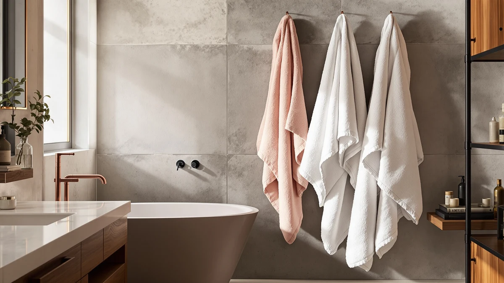

Best Bath Towels for Airbnb of 2026: 7 Top Picks | Best Bath Towels


Quick Answer
For most Airbnb hosts, the Corporate Hills CH White Bath set delivers hotel-style white cotton towels that survive frequent washing and bleaching without graying fast. It costs $31.49, dries quickly between turnovers, and matches any bathroom color scheme.
Our pick: Corporate Hills CH White Bath, $31.49 Check Price on Amazon
Bottom line: our top pick is the Corporate Hills CH White Bath at $34.99. The best budget option is the Wealuxe White Bath Towels Set at $34.99.
Things to Know Before You Buy
- White wins, with one exception. All-white towels signal cleanliness and let you bleach out stains, which is why hotels use them. Switch to grey or a color only when an all-white palette would look out of place.
- Buy in bulk and over-stock. Plan on two to three towels per guest per bathroom so you can pull stained ones from rotation. Six-packs lower your cost per room.
- Size affects turnover speed. Smaller 22x44 towels dry faster between same-day bookings, and oversized 27x54 bath sheets feel premium but take longer to launder.
- Cotton is the safe default. Each set here is 100% cotton, which handles hot washes and bleach better than blends and feels right to guests.
- Match towels to your listing tier. A budget studio and a luxury cabin call for different towels, so spend where guests notice and mention it in reviews.
The best bath towels for Airbnb have to look crisp in listing photos and still dry a guest after every shower, then hold that shape through hundreds of hot washes. A towel that works fine at home can fall apart in a rental, where laundry runs constantly and bleach is part of the routine. That gap between home use and host use shaped every pick in this guide.
After comparing seven cotton towel sets on color, size, durability, and per-room cost, I keep coming back to the Corporate Hills CH White Bath set. It gives you the classic hotel white that reads as clean in photos, and it takes a bleach cycle without graying fast. At $31.49, it still leaves room in the budget to stock spares. For most hosts, that is the set to order first.
Your property is not the only one that matters, though. A beachside cottage, a four-bathroom house, and a budget studio each call for a different towel, so this guide names a clear winner for the typical listing plus a high-volume option, a budget set, a colored choice, and an oversized upgrade. Pick the one that fits how your guests use the bathroom.
Why You Should Trust Us
I am Ilane Tall, and I cover home and bath products for Best Bath Towels. For this guide to the best bath towels for Airbnb, I focused on the towels that work for hosts rather than for a single household, because a rental laundry routine is harder on linens than home use. I weighed each set on the problems hosts report: whether the white survives bleach, how fast the towels dry between turnovers, and what each one costs once you multiply it across several bathrooms.
I do not run a fake testing lab or quote experts who do not exist. The picks below come from comparing the real specifications, materials, sizes, and prices of seven cotton towel sets against the practical demands of short-term rental hosting. When a set has a drawback, you read about it in the same paragraph as its strengths.
How We Picked
To build this list of the best bath towels for Airbnb, I started with sets that meet a host's non-negotiables: 100% cotton, a price that makes sense across several rooms, and a color that survives frequent laundering. I screened out novelty fabrics and blends that pill or hold odor, since rental towels get washed far more often than home towels.
From there I sorted the field by use case. Hosts do not all need the same towel, so I chose a clear winner for the typical listing, a high-volume option for big homes, a budget set for tight furnishing budgets, a colored choice for themed rooms, and an oversized upgrade for premium stays. Each pick had to earn its slot against the others on price, size, and durability.
How We Compared
I evaluated each set of Airbnb bath towels against the conditions a rental puts them through, not a one-time home wash. That means judging how the cotton would hold up to repeated hot cycles and the occasional bleach pass, how fast each size dries when you flip a unit the same day, and whether the pack count fits a real multi-bathroom property.
I compared the published material, dimensions, pack size, and price for all seven sets side by side, then mapped each one to the host it serves best. Where a towel runs thin, fades, or comes up short on count, I called it out instead of smoothing it over. The goal was a short list a host can order from with confidence, not a ranking padded with filler.
Our Picks

Corporate Hills CH White Bath
What we like
- All-white cotton matches any bathroom and signals clean
- Handles bleach and hot washes without graying fast
- Compact 22x44 size dries quickly between turnovers
Flaws but not dealbreakers
- Runs smaller than a 27x54 bath sheet
- Single set, so large homes need several orders
- White shows makeup and tan stains until washed
| Material | 100% cotton |
| Size | Bath Towel 22"x44" |
The Corporate Hills CH White Bath set earns the top spot because it solves the host's core problem: towels that still look hotel-fresh after a hundred guests. The all-white 100% cotton survives the hot washes and occasional bleach cycle that Airbnb turnovers demand, and white will not clash with a bathroom you might repaint next season. At $31.49, it sits in the middle of this group on price while leading on practicality.
The 22x44 inch size is the main trade-off. It is closer to a standard bath towel than an oversized bath sheet, so guests who expect a large wrap may notice. For most hosts that smaller size is a quiet advantage, since shorter towels dry faster between same-day turnovers and take up less linen-closet space. Buy two or three sets for a multi-bath home and you get a consistent, photo-ready white that reads as clean in every listing image.

BolBom*S Beach Towels 6 Pack
What we like
- Six towels in one order cover multiple bathrooms
- Thin, quick-drying weave turns around fast on laundry day
- Beach-friendly look suits coastal and lakeside listings
Flaws but not dealbreakers
- Sold as beach towels, so they feel thinner than bath towels
- Patterned styles date faster than plain white
- Lighter pile absorbs less than a heavier cotton
| Material | 100% cotton |
| Size | 6 |
The BolBom*S Beach Towels 6 Pack is the runner-up because it answers a different host need: volume. Six 100% cotton towels arrive in one $37.98 order, which covers two or three bathrooms or gives guests spare towels for a pool, lake, or beach day. The lighter weave dries quickly, so you can wash and re-stage a full set on a single turnover.
These are sold as beach towels, and they feel like it. The pile is thinner than a dedicated bath towel, so they absorb a little less and feel less plush on the skin. For a coastal or lakeside Airbnb that is often the right call, since guests appreciate dedicated towels they can take outside without ruining your good bath linens. Keep a heavier set for the bathroom and let these handle the dock and the deck.

ZUPERIA White Bath Towels Bulk
What we like
- Larger 24x48 size wraps guests more fully
- Bulk pricing lowers the per-towel cost for big homes
- All-white cotton fits the hotel look guests expect
Flaws but not dealbreakers
- Highest sticker price in this group
- All-white means stains show until laundered
- Bulk sets can vary slightly in thickness
| Material | 100% cotton |
| Size | Bath Towel 24"x48" |
The ZUPERIA White Bath Towels Bulk set is our pick for larger rentals that burn through towels. The 24x48 inch towels run bigger than our top pick, so guests get a fuller wrap, and the all-white 100% cotton holds the same hotel look. Bulk packaging brings the per-towel cost down even though the $39.99 sticker is the highest here.
White is the obvious choice for an Airbnb because it signals cleanliness and lets you bleach out stains, though it does show makeup and self-tanner until the next wash. Stock enough that you can pull a stained towel from rotation without leaving a bathroom short. For a three- or four-bathroom home that turns over weekly, the larger size and bulk count make ZUPERIA the easiest set to live with.

White Classic Wealuxe Grey Towels
What we like
- Six 24x50 towels keep the per-room cost low
- Grey hides light stains better than white
- Soft cotton feels better than the price suggests
Flaws but not dealbreakers
- Grey will not match a strict all-white scheme
- Color can fade over many hot washes
- Thinner than premium spa towels
| Material | 100% cotton |
| Size | Bath Towels 6-Pack, 24x50 Inches |
The White Classic Wealuxe Grey Towels set is our budget pick, and it stretches a host's furnishing dollar the furthest. Six 24x50 inch cotton towels for $37.99 works out to a low per-room cost, and the soft pile feels better than the price implies. Grey is the smart color hedge here, since it hides the light stains and water spots that show up fast on white.
The catch is the color itself. Grey will not blend into a strict all-white bathroom, and the dye fades a little faster than white after repeated hot washes. If your palette already leans neutral or modern, that grey reads as intentional rather than worn. For a host outfitting several bathrooms at once without overspending, this six-pack is the most efficient buy in the lineup.

White Classic Wealuxe Green Bath
What we like
- Six 24x50 towels in a single order
- Green adds warmth to coastal or boho rooms
- Same soft cotton as the grey set
Flaws but not dealbreakers
- Colored towels limit future palette changes
- Dye can bleed in the first wash or two
- Color shows fading sooner than white
| Material | 100% cotton |
| Size | Bath Towels 6-Pack, 24x50 Inches |
The White Classic Wealuxe Green Bath set gives Airbnb hosts a color option that white and grey cannot. Six 24x50 inch cotton towels for $37.99 bring warmth to a coastal, boho, or garden-themed room, and the cotton matches the soft feel of its grey sibling. A pop of green can make a small bathroom photograph as styled rather than plain.
Color narrows your options later. Once you commit to green towels, a future repaint has to work around them, and the dye can bleed slightly in the first wash or two before it settles. Wash these separately at first and you avoid tinting your white linens. For a themed listing where white would feel sterile, the green set adds personality without raising the price.

Wealuxe White Bath Towels Set
What we like
- Lowest entry price for a white cotton set
- Four towels suit a studio or one-bath unit
- Classic white matches any decor
Flaws but not dealbreakers
- Four towels fall short for multi-bath homes
- Standard weight rather than plush
- White needs bleaching to stay bright
| Material | 100% cotton |
| Size | Bath Towels, 4 Pack |
The Wealuxe White Bath Towels Set is the right pick for a studio or single-bathroom Airbnb. Four 100% cotton towels for $32.99 is the lowest entry cost for a clean white set, and white keeps the bathroom looking hotel-tidy in listing photos. For a one-bath unit, four towels covers two guests with a spare on hand.
Four towels is also the limit. A two- or three-bathroom home will run short fast, so this set fits compact rentals rather than large houses. The weight is standard rather than plush, and like any white towel it needs an occasional bleach cycle to stay bright. For a small space on a starter budget, it covers the basics without waste.

Hawmam Linen White Bath Towels
What we like
- Full 27x54 bath-sheet size feels generous
- Breathable cotton dries quickly after washing
- Four oversized towels read as premium to guests
Flaws but not dealbreakers
- Larger towels take longer to machine dry
- Four-pack covers fewer bathrooms than a six-pack
- Oversized towels need more storage space
| Material | 100% cotton |
| Size | 27 in x 54 in Bath Towel 4 Pack |
The Hawmam Linen White Bath Towels set is the upgrade choice for premium listings. At 27x54 inches, these are full bath-sheet size, so guests get the oversized wrap they expect from a boutique hotel. The four-pack of breathable 100% cotton costs $36.99 and reads as a clear step up in a luxury Airbnb.
Bigger towels carry two small costs. They take longer to machine dry, which matters on a same-day turnover, and a four-pack covers fewer bathrooms than the six-packs above. They also need more shelf space in the linen closet. For a high-end rental where the review mentions towel quality, those trade-offs are worth the spa-like first impression these towels create.
Quick Comparison
| Product | Material | Price | Rating | Best for | Get it |
|---|---|---|---|---|---|
| Corporate Hills CH White Bath | 100% cotton | $31.49 | 4 | Classic hotel-white for most hosts | View on Amazon → |
| BolBom*S Beach Towels 6 Pack | 100% cotton | $37.98 | 4 | Beach, pool, and lakeside rentals | View on Amazon → |
| ZUPERIA White Bath Towels Bulk | 100% cotton | $39.99 | 4 | Large homes that reorder in bulk | View on Amazon → |
| White Classic Wealuxe Grey Towels | 100% cotton | $37.99 | 4 | Tight budgets that want stain-hiding grey | View on Amazon → |
| White Classic Wealuxe Green Bath | 100% cotton | $37.99 | 4 | Coastal or themed colored bathrooms | View on Amazon → |
| Wealuxe White Bath Towels Set | 100% cotton | $32.99 | 4 | Studios and single-bath units | View on Amazon → |
| Hawmam Linen White Bath Towels | 100% cotton | $36.99 | 4 | Premium listings wanting oversized towels | View on Amazon → |
The Competition
Plenty of towel sets did not make this list of the best bath towels for Airbnb. Microfiber and bamboo-blend towels promise quick drying, but they tend to hold odor and feel synthetic against the skin, which draws guest complaints in a rental. Patterned or heavily logoed towels date a listing fast and limit your decor changes, so I left them off.
Ultra-plush spa towels are tempting for luxury listings, though their weight slows same-day turnovers and they wear out faster under bleach, so they rarely justify the cost for a working rental. I also passed on no-name single towels sold without a multi-pack, since hosts need consistent sets they can reorder.
Among the best bath towels for Airbnb, the Corporate Hills CH White Bath set remains the one I would stock first for most hosts: classic white, bleach-friendly cotton, and a turnover-friendly size at $31.49.
Frequently Asked Questions
What color bath towels are best for an Airbnb?
White is the standard for most Airbnbs because it signals cleanliness and lets you bleach out stains. Choose grey or a color only when an all-white set would clash with your bathroom palette, as with the White Classic grey and green sets in this guide.
How many bath towels do I need per Airbnb bathroom?
Plan for two to three towels per guest per bathroom so you can rotate stained ones out without leaving a room short. Six-packs like the ZUPERIA and White Classic sets make it easy to keep that buffer and reorder in bulk.
What size bath towel works best for short-term rentals?
A standard 22 to 24 inch wide towel dries fastest between same-day turnovers, while a 27x54 inch bath sheet like the Hawmam Linen set feels more premium for luxury listings. Match the size to your listing tier and your laundry turnaround.
Are cotton or microfiber towels better for an Airbnb?
Cotton is the safer choice for a rental. Each set in this guide is 100% cotton, which handles hot washes and bleach better than microfiber and avoids the synthetic feel and trapped odor that draw guest complaints.